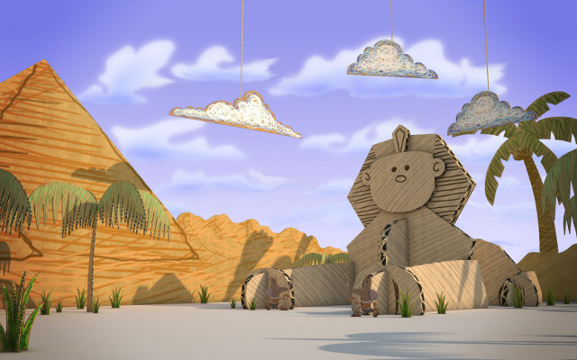
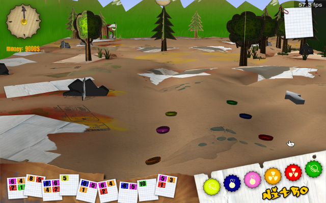
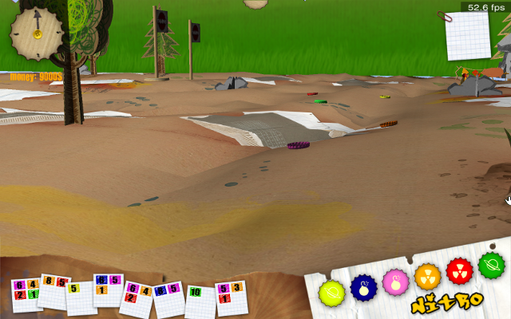
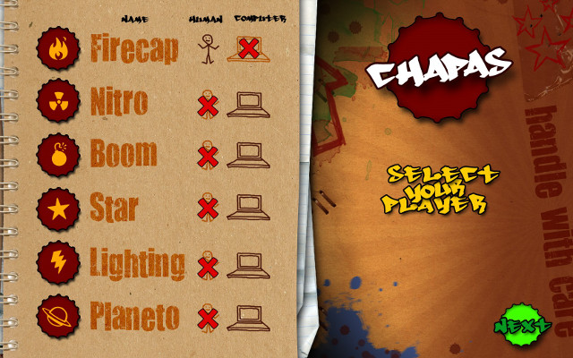

Chapas
Chapas is a turn-based multiplayer bottlecap racing game, implemented with innovative Genetic Terrain Programming techniques, employing solely open-source tools.
The game terrains are generated dynamically, allowing for a different playing experience every time. The techniques used provide the possibility of the generation of various different kinds of terrains, be it flat or mountainous, with rivers and volcanoes, or even with surreal features.
| Role | Programmer |
| Companies | Glow and Centro Universitario de Mérida |
| Dates | December 2008 – December 2010 |
| Genre | Racing |
| Platforms | Windows, Linux |
| Technologies | Panda3D, Open Dynamics Engine, Python, C |
| URL | sourceforge.net/projects/chapas |
| Status | Released under LGPL |

The players strategically control their progress with cards.
A typical round of Chapas starts by dealing 9 random cards to each player. Each of these cards represents movement points for the different bottlecaps.
Afterwards, an auction takes place, where the players use their money (an initially set amount, that accumulates over different rounds), to buy the bottlecaps better suited to each player’s cards.
A different playing experience every time!
Finally, the race phase starts, where the players use their cards, on their respective turn, to move the bottlecaps across the field, passing through each checkpoint (where they can restock their cards for money).
The round ends when every player has reached the finish line, or ran out of cards.
Multiplayer was a big requirement from the start.
We wanted to ensure every possible distribution of players was supported, and the result is that Chapas may be played in single player, local multiplayer, online multiplayer, and any variation of the previous configurations.
Three friends on the same computer and two on the other side of the world? No problem. Missing a friend? The artificial intelligence can control the remaining bottlecap!
Chapas was on TV!
Chapas generated quite a buzz at the time, and the spanish tv show Conecta-T ended up interviewing me for it. I wasn’t ready for it, and spanish isn’t my main language, but it ended up being quite a fun experience! Conecta-T speaks about the latest technologies, the internet and everything in between.
Its innovative techniques were a contribution to the scientific community.
Given its Genetic Terrain programming techniques, Chapas was also featured on a scientific article:
“Development of Chapas – an Open Source Video Game with Genetic Terrain Programming.” – Nelson Rodrigues, Miguel Frade, and Francisco Fernandez de Vega
(PDF)
Miguel Frade presented it at the "VII Spanish Congress on Metaheuristics, and Bio-inspired Evolutionary Algorithms (MAEB)", in 2010.